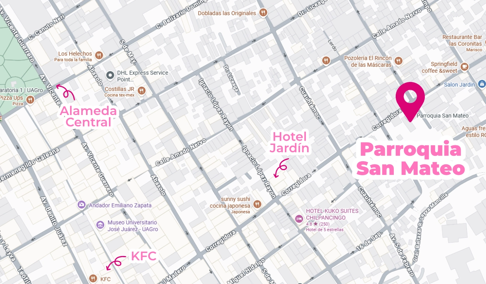
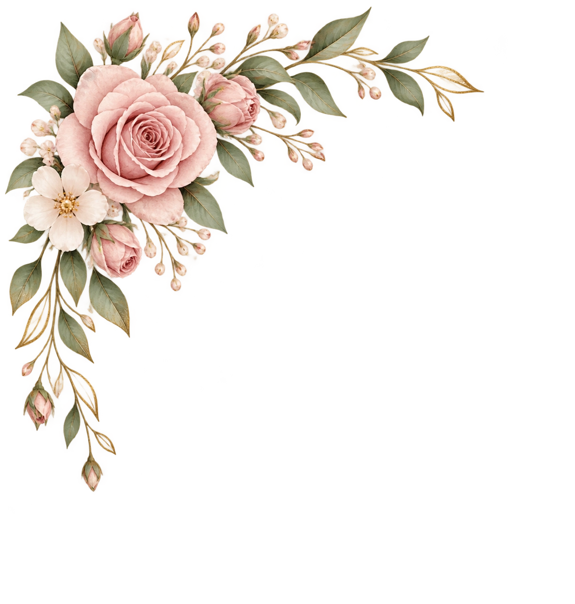
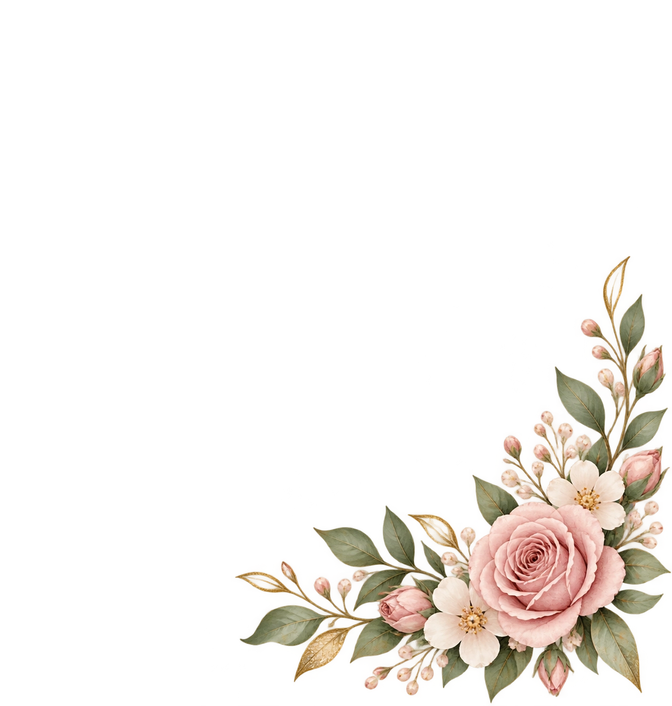
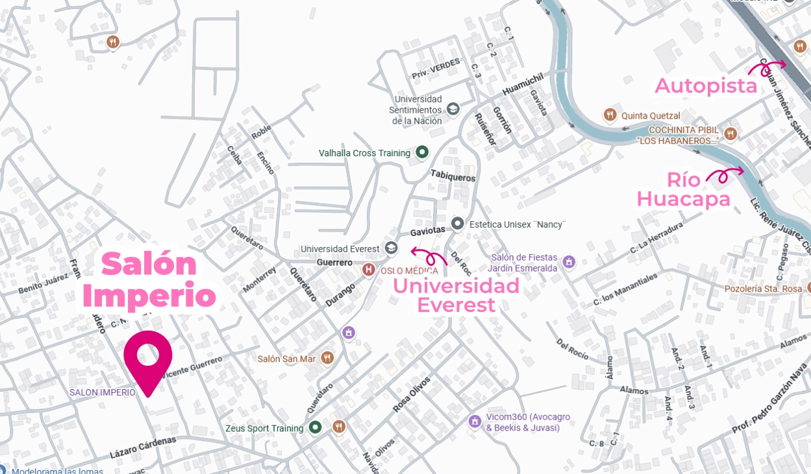
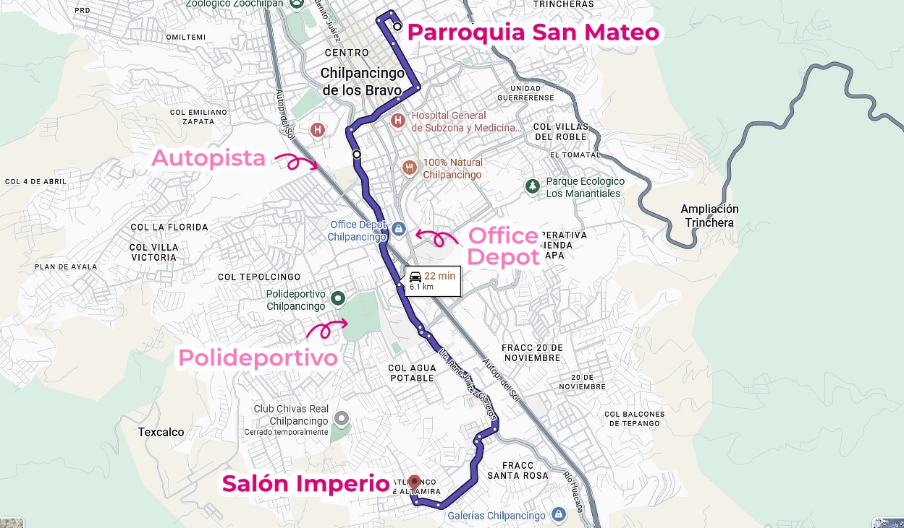

Agradezco a Dios por este día y por las personas que llenan mi vida de alegría
La ceremonia
2:00 P.M.
Parroquia de San Mateo

⌖ Ver mapa en Google Maps ⌖ Ver ubicación en Maps
Un día para soñar
Para celebrar los XV años de
Keyla Chávez Ventura

Con la bendición de Dios y de mi familia
Mis XV años
Toca el botón para escuchar la canción ♡
Cada vez falta menos
Celebremos juntos
Tu presencia hará este día aún más inolvidable.
Agradezco a Dios por este día y por las personas que llenan mi vida de alegría
2:00 P.M.
Parroquia de San Mateo

⌖ Ver mapa en Google Maps ⌖ Ver ubicación en MapsLa magia de este día será aún más bonita si lo compartimos juntos
Al finalizar la ceremonia se podra ingresar
Salón Imperio

⌖ Ver mapa en Google Maps ⌖ Ver ubicación en MapsDe la ceremonia a la recepción
Consulta el recorrido desde la Parroquia de San Mateo hasta el lugar de la celebración.

⌖ Ver recorrido en Google Maps ⌖ Ver recorrido en MapsTu compañía es mi mejor regalo
Me encantaría contar contigo en este día tan especial.
Personas confirmadas
0 asistentes confirmados